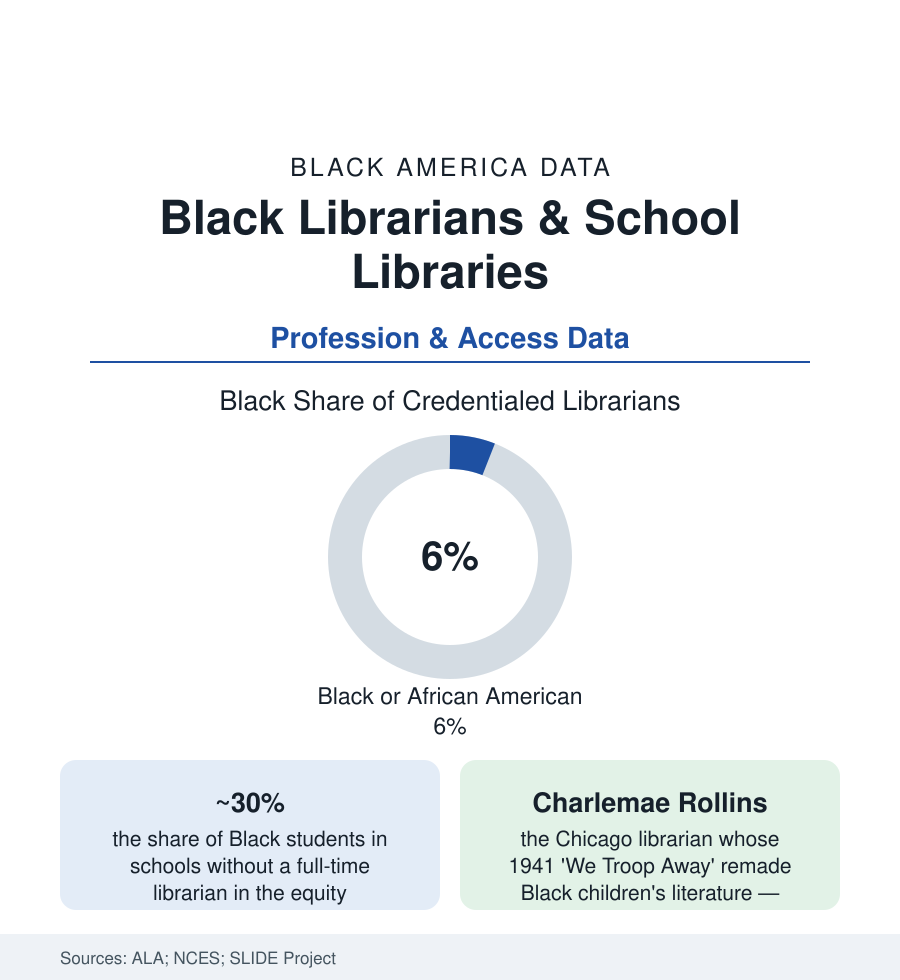

Black Education
Black Librarians and School Libraries: The Keepers of the Stacks
Black librarians are about 6% of the profession — and nearly 3 in 10 Black students attend schools with no librarian at all. The ALA and NCES data on the reading infrastructure.

Every literacy number in this section runs through a building with books and a professional who curates them, and both halves of that infrastructure are racially uneven in the data: Black librarians constitute roughly six percent of the credentialed profession in the American Library Association's demographic studies, and Black students are among the most likely in America to attend a school with no librarian at all in the federal staffing data. The pairing is an old story in new numbers — the library was a front line of the segregation era (the read-ins, the closed branches) and remains a front line of the funding era. This article reads the stacks' data.
The Profession: Six Percent and Its Institutions
The ALA's membership and workforce studies give librarianship one of the whitest professional profiles in this atlas — Black librarians around six percent, against a library workforce (including support staff) considerably more representative, the credential gradient sorting by race as it does everywhere in these pages. The profession's Black tradition is nonetheless foundational in the record: the branch librarians of the Harlem Renaissance (the 135th Street branch's Schomburg collection built under Black librarians' stewardship), Charlemae Hill Rollins' Chicago work transforming Black children's literature and its reviewing standards, the segregated South's 'colored branches' staffed by Black librarians who ran full civic institutions out of single rooms (the archives preserving their circulation and program records), and the Black Caucus of the ALA (founded 1970) as the profession's organized conscience. The pipeline data run through the library schools (Black enrollment in the master's programs — the profession's single entry credential — in the mid single digits in the accreditor's counts), the HBCU library programs' historic role, and the scholarship and residency instruments of the current era.
The School Library Gap: Staffing Where the Students Are
The NCES staffing surveys and the SLIDE project's district-level analyses draw the access map: school librarian positions have been cut for two decades (the national count of full-time librarians down markedly from its 2000 level), and the cuts follow the funding file's geography — schools serving the most Black students and the highest poverty are the likeliest to have lost their librarian entirely or to share one across buildings, with roughly three in ten Black students in the analyses attending schools without a full-time librarian, among the highest shares of any group. The consequences are measured in the same research programs: the state-level studies (the long-running 'school library impact' literature) associating staffed libraries with reading-score gains largest for the most disadvantaged students — the equity arithmetic inverted, the resource withdrawn first from the students its effects would most benefit. The collection data complete it: the diversity audits of children's and school collections (the Cooperative Children's Book Center's annual counts of books by and about Black creators — rising from under ten percent of new titles in the 2010s to the mid-teens in the recent counts) determining what the staffed library can even shelve.
Public Libraries: The Branch as Anchor
The public-library file repeats the pattern at civic scale: the IMLS data on branches and hours (closures and hour-cuts concentrated, in the urban studies, in the same disinvested neighborhoods as every other file's), the Black branch librarians as neighborhood institution-keepers — the homework help, the job-search terminals, the cooling center and the voting site — and the landmark institutions of Black librarianship anchoring the national map (the Schomburg Center in Harlem, the Auburn Avenue Research Library in Atlanta, the Moorland-Spingarn at Howard, the Vivian G. Harsh collection in Chicago — the research libraries whose very existence is a Black librarian's argument preserved in buildings). The current era's fights (the collection challenges sweeping school and public libraries in the state data — their targets disproportionately the Black-authored shelf in the PEN and ALA challenge records) place the Black librarian at the exact center of the reading file's politics of access, as gatekeeper-defendant of the collection the Rollins generation built.
Reading the Library Data
Six percent of the librarians, three in ten of the Black students unserved by one: the library data measure the distance between a profession's honored history and its staffed present. The reading scores in this section's first articles are partially written here — in whether a child has a librarian, and in whose hands the collection rests. The stacks have never been neutral in the data. They have only been staffed, or not.
More in Black Education
Black Educational Attainment: High School Parity, the College Gap
About 89 percent of Black adults hold a high school diploma and one in four holds a bachelor's degree or higher — the attainment ladder, the college completion gap, and the generational trend.
Historically Black Colleges and Universities: Enrollment and Degrees
More than 100 HBCUs enroll roughly 290,000 students and award about one in six Black bachelor's degrees — an outsized share from a small sector. The federal education data.
Black College Enrollment: 2.4 Million Students
About 2.4 million Black students are enrolled in American colleges — nearly two-thirds of them women. The NCES enrollment data by sector, level, and trend.
Source: American Library Association demographic studies; National Center for Education Statistics Schools and Staffing surveys; Institute of Museum and Library Services; SLIDE project research on school librarian equity.